Create Set of Books (Advanced - MSSQL)
osFinancials Set of Books Microsoft SQL Server database type
Before creating an MSSQL database type (Set of Books), you must add an empty database in "Microsoft SQL Server".
This option allows you to create your own Set of Books for the MSSQL database type from scratch without using any of the Set of Books (templates) already available for osFinancials and customize them according to your needs.
When you create a Set of Books for the MSSQL database type consists of 2 parts:
- Create a new blank database for osFinancials5 on "MSQL Server"
- Create a new Set of Books in osFinancials5 for the "MSQL Server" database type.
Create a new bank database in Microsoft SQL Server
Before creating a MSSQL Database type (Set of Books) in osFinancials, it is necessary to add a blank database in Microsoft SQL Server. This database will serve as the foundation for your Set of Books and will store all the financial data and information.
To add a blank database in Microsoft SQL Server, follow these steps:
- Open Microsoft SQL Server Management Studio.
- Connect to your SQL Server instance using the appropriate credentials.
- In the Object Explorer, right-click on "Databases" and select "New Database..."
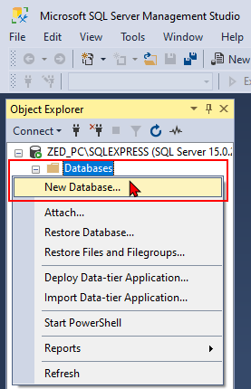
- Provide a name for your new database and configure any additional settings, such as file locations and sizes.
- Click "OK" to create the blank database.
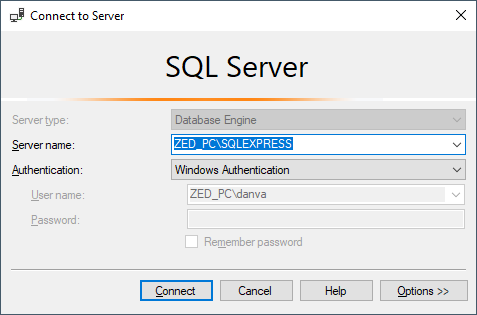
Once you have successfully added the blank database, make note of the Server name (and instance if applicable) and the name of your newly created database. These details will be required during the process of creating a new Set of Books in osFinancials using the "Customise your own Set of Books (Advanced)?" option.
By having a blank database in place, you can start building your Set of Books from scratch and tailor it to meet your specific needs and requirements within the MSSQL database type (Microsoft SQL Server).
Create a new Set of Books in osFinancials5 for the "MSQL Server" database type
In osFinancials, when creating a Set of Books from scratch using the "Customise your own Set of Books (Advanced)?" option in the "Creation wizard", you have the flexibility to define your chart of accounts according to your specific needs and requirements.
When creating a Set of Books using the "Customise your own Set of Books (Advanced)?" option, you begin with a clean slate and have to build your chart of accounts from scratch. The initial setup process will only include three main control accounts: the Debtor's control account, Creditor's control account, and Retained earnings account.
|
|
As part of this customisation process, you will have the opportunity to set the number of main digits for your accounts, ranging from 3 to 8 digits. Additionally, you will specify the account numbers for three main control accounts: the Creditors control account, Debtors control account, and Retained earnings account.
By defining these main control accounts during the Set of Books creation process, you can structure your chart of accounts and design the account numbering system that aligns with your specific accounting practices and reporting requirements. |

To complete the setup and create a comprehensive chart of accounts, you will need to define and link all the necessary accounts in your organisation. This includes creating and setting up Ledger accounts, Bank accounts, Creditor accounts, Debtor accounts, and Tax accounts. You have the flexibility to customize the account structure and naming conventions based on your specific requirements.
Additionally, you will also need to create and configure other elements such as Batch types, Groups, and any other accounts or settings that are relevant to your business operations. This allows you to tailor the Set of Books to suit your organisation's needs and ensure accurate financial management and reporting.
By going through the setup process and defining the necessary accounts, you establish the foundation for recording and managing financial transactions within osFinancials, enabling you to effectively track and analyse your company's financial activities.
Choosing the number of digits for main accounts
See - Chart of Accounts - Optimising 4-,5-,6-,7- and 8-digit main accounts - Some recommendations and tips to plan your Chart of Accounts according to your selection on the number of Main account digits -
Choosing the appropriate number of digits for main accounts is an important consideration when setting up your Chart of Accounts in osFinancials. The number of digits determines the level of detail and granularity in your account numbering system.
When creating your Set of Books, you will be prompted to select the number of main account digits. For example, if you choose a 4-digit main accounts Chart of Accounts, the and you have initially assigned the following account numbers: 1100 for the Debtor's control account, 2100 for the Creditor's control account, and 3100 for the Retained earnings account. These are default account codes that can be modified later if needed.
The selection of main account digits impacts the structure and organization of your Chart of Accounts. Here are some recommendations and tips to consider:
- 4-digit main accounts: This option provides a concise and compact Chart of Accounts, it can be suitable for small and medium enterprises as well as larger organizations that need to comply with various accounting frameworks and standards such as GAAP US, GAAP UK, SA GAAP, NZ GAAP, IFRS (full), IFRS for SMEs, and others based on their jurisdiction and accounting needs. However, it's important to note that this option may have limitations in accommodating detailed account classifications or sub-categories.
- 5 to 8-digit main accounts: These options offer greater offer greater flexibility and granularity in your Chart of Accounts. These options allow for more detailed account classifications and sub-categories, making them beneficial for larger organizations or those with complex accounting requirements. With these options, you can design a Chart of Accounts that aligns precisely with your financial reporting needs and internal management requirements.
It's crucial to consider your organization's size, complexity, and reporting needs when choosing the number of main account digits. By selecting the appropriate option, you can ensure that your Chart of Accounts supports accurate financial reporting, compliance with accounting standards, and effective management of your organization's financial data.
|
|
When creating a Set of Books with the option to choose the number of digits for main accounts, you have the flexibility to select a structure that suits your needs. Here are the available options and the corresponding number of digits for the general ledger main accounts: 4-Digit General ledger main accounts: Enter a 4-digit numeric code for each of the Creditor's control, Debtor's control, and Retained income/earnings accounts (e.g., 2100, 1100, and 3100). This option includes 3-digit sub-accounts as well as 7-Digit account codes for Debtor accounts in the debtors ledger and Creditor accounts in the creditors ledger. 5-Digit General ledger main accounts: Enter a 5-digit numeric code for each of the Creditor's control, Debtor's control, and Retained income/earnings accounts (e.g., 21000, 11000, and 31000). This option includes 3-digit sub-accounts as well as 8-Digit account codes for Debtor accounts in the debtors ledger and Creditor accounts in the creditors ledger 6-Digit General ledger main accounts: Enter a 6-digit numeric code for each of the Creditor's control, Debtor's control, and Retained income/earnings accounts (e.g., 210000, 110000, and 310000). This option includes 3-digit sub-accounts as well as 9-Digit account codes for Debtor accounts in the debtors ledger and Creditor accounts in the creditors ledger 7-Digit General ledger main accounts: Enter a 7-digit numeric code for each of the Creditor's control, Debtor's control, and Retained income/earnings accounts (e.g., 2100000, 1100000, and 3100000). This option includes 3-digit sub-accounts as well as 10-Digit account codes for Debtor accounts in the debtors ledger and Creditor accounts in the creditors ledger 8-Digit General ledger main accounts: Enter an 8-digit numeric code for each of the Creditor's control, Debtor's control, and Retained income/earnings accounts (e.g., 21000000, 11000000, and 31000000). This option includes 3-digit sub-accounts as well as 11-Digit account codes for Debtor accounts in the debtors ledger and Creditor accounts in the creditors ledger When planning your Chart of Accounts, it's important to carefully consider and define the codes or numbers for these accounts based on the structure you have chosen. This will help ensure consistency and organization in your financial reporting and analysis. |

After creating your Set of Books, you still have the flexibility to change the account codes or numbers in the Chart of Accounts. In the Setup → Accounts menu on the Setup ribbon, you can modify the account codes to align with your specific requirements, including the codes for the Creditor's control, Debtor's control, and Retained income/earnings accounts (e.g., 2100, 1100, and 3100 in the example of the 4-Digit General ledger main accounts). This initial stage allows you to plan and design your chart of accounts according to your needs.
|
|
However, it's important to note that once you start processing functions such as entering transactions or budgets, you may not be allowed to change the account codes or numbers. Therefore, careful consideration and planning during the initial setup stage is crucial to ensure accurate financial structure and reporting. |
By carefully selecting the number of main account digits and customizing the account codes in the Chart of Accounts, you can optimize the organization and usability of your financial data within osFinancials.
Defining Account groups and Financial categories
Before creating and setting up Ledger accounts, Bank accounts, Creditor accounts, Debtor accounts, and Tax accounts in osFinancials, it is recommended to define the basic classification of accounts using Account Group 1 or Account Group 2. This helps organize and categorize your accounts based on their nature or function.
In the Setup → Groups menu on the Setup ribbon, you can add Account Group 1 or Account Group 2 and assign them meaningful names that represent different account classifications. For example, you can create groups for fixed assets, cash and receivables, current assets, current liabilities, equity, operating expenses, operating revenue, non-operating expenses, non-operating revenue, etc. These groups provide a structured framework for organising your accounts.
After creating the account groups, you can map or link them to the five financial categories: Assets, Liabilities, Equity, Income, and Expenses in the Setup → Financial categories menu on the Setup ribbon. This mapping ensures that the accounts are correctly classified within the financial framework of your organisation.
When you proceed to create and set up Ledger accounts, Bank accounts, and Tax accounts in the Setup → Accounts menu, you will have the option to select the appropriate Account Group 1 and/or Account Group 2 for each account. By associating the accounts with their respective account groups, you establish a hierarchical structure that allows for easier navigation and analysis of financial information.
By properly defining and linking account groups, you lay the foundation for accurate financial reporting and analysis within osFinancials, enabling you to effectively track and manage your organisation's financial data.
Customize your own Set of Books (Advanced) option for MSSQL database type
The "Customize your own Set of Books (Advanced)?" option in osFinancials provides a powerful capability to create a customized Set of Books tailored to your specific requirements. In addition to the default Firebird database type, osFinancials also offers the option to create a Set of Books for the MSSQL database type.
By selecting the MSSQL database type, you can take advantage of the features and benefits offered by Microsoft SQL Server. This includes robust data management, scalability, and integration capabilities, making it an ideal choice for organisations that prefer to utilize SQL Server as their database platform.
With the "Customize your own Set of Books (Advanced)?" option for MSSQL database type, you have the freedom to design and build your Set of Books from scratch, ensuring it aligns perfectly with your financial structure and reporting needs. This allows you to define your own chart of accounts, configure account settings, set up ledger accounts, bank accounts, tax accounts and establish various parameters according to your specific business requirements.
Let's explore the process of creating a Set of Books using the "Customize your own Set of Books (Advanced)" option for the MSSQL database type, empowering you to create a comprehensive financial management system tailored to your organization's needs.
Process to create a Set of Books using the Customize your own Set of Books (Advanced) option
To create a Set of Books using the Advanced option:
- On the Start ribbon, you can select the Create Set of Books option or simply press the F10 key on your keyboard.
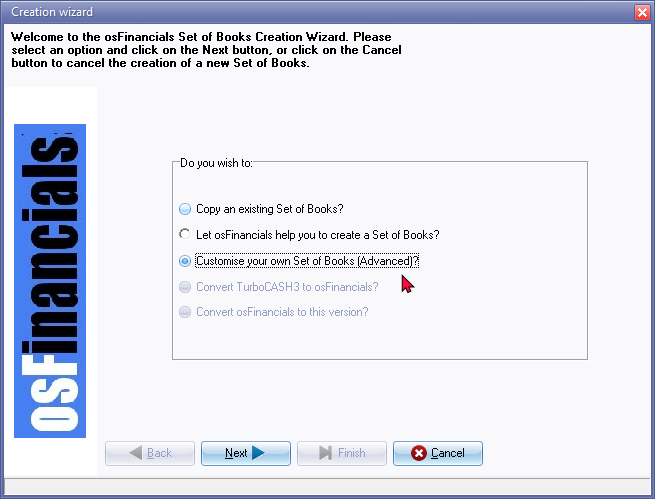
- osFinancials5 automatically defaults to the option “Let osFinancials help you to create a Set of Books?”, as this is the recommended option for most users. Select the "Create a Set of Books (Advanced)?" option.
- Click on the Next button.
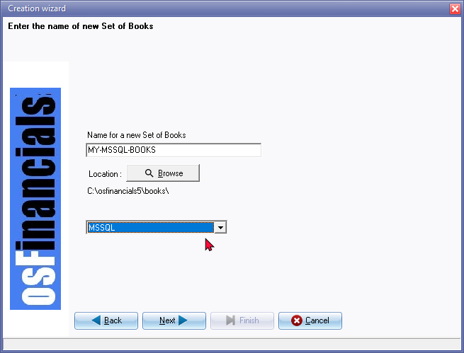
- Enter the name for your Set of Books for the blank database that you have created in the Microsoft SQL Server.
|
|
It's important to note that when selecting the "MSSQL" option, you should have already set up a blank database in Microsoft SQL Server, and have the necessary credentials and information to establish the connection with the SQL Server instance. |
|
|
The Directory in which you create the Set of Books is displayed underneath the Location Browse button. It will usually be the default directory (e.g. "C: \ osfinancials5 \ books" folder in which osFinancials is installed or directory, which you have specified when you installed osFinancials. If you wish to create your Set of Books in any other directory or location on your system, you may click on the Browse button, if desired, to select any folder or drive on the "Pick a directory" screen. |
- Database type: By default, osFinancials uses the "Firebird (default)" database type. However, if you prefer to create a Microsoft SQL Server database for your Set of Books, you can choose the "MSSQL" option. Selecting the "MSSQL" option ensures that the database is specifically configured to work with Microsoft SQL Server. This allows you to take advantage of the features and capabilities provided by the SQL Server platform.
- Check the database type is set to the "MSSQL" option, and click on the Next button.
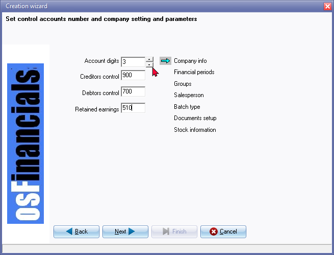 - Account digits: The default number of account Digits is 3. Select the desired number of digits for your general ledger main accounts. This will determine the structure and length of the account codes for the Creditor's control, Debtor's control, and Retained income/earnings accounts.
- Account codes: Enter the numeric code for each of these accounts based on the chosen number of digits. For example, in a 4-digit structure, you would enter codes like 2100, 1100, and 3100.
|
|
When creating a Set of Books with the option to choose the number of digits for main accounts, you have the flexibility to select a structure that suits your needs. Here are the available options and the corresponding number of digits for the general ledger main accounts: 4-Digit General ledger main accounts: Enter a 4-digit numeric code for each of the Creditor's control, Debtor's control, and Retained income/earnings accounts (e.g., 2100, 1100, and 3100). This option includes 3-digit sub-accounts as well as 7-Digit account codes for Debtor accounts in the debtors ledger and Creditor accounts in the creditors ledger. 5-Digit General ledger main accounts: Enter a 5-digit numeric code for each of the Creditor's control, Debtor's control, and Retained income/earnings accounts (e.g., 21000, 11000, and 31000). This option includes 3-digit sub-accounts as well as 8-Digit account codes for Debtor accounts in the debtors ledger and Creditor accounts in the creditors ledger 6-Digit General ledger main accounts: Enter a 6-digit numeric code for each of the Creditor's control, Debtor's control, and Retained income/earnings accounts (e.g., 210000, 110000, and 310000). This option includes 3-digit sub-accounts as well as 9-Digit account codes for Debtor accounts in the debtors ledger and Creditor accounts in the creditors ledger 7-Digit General ledger main accounts: Enter a 7-digit numeric code for each of the Creditor's control, Debtor's control, and Retained income/earnings accounts (e.g., 2100000, 1100000, and 3100000). This option includes 3-digit sub-accounts as well as 10-Digit account codes for Debtor accounts in the debtors ledger and Creditor accounts in the creditors ledger 8-Digit General ledger main accounts: Enter an 8-digit numeric code for each of the Creditor's control, Debtor's control, and Retained income/earnings accounts (e.g., 21000000, 11000000, and 31000000). This option includes 3-digit sub-accounts as well as 11-Digit account codes for Debtor accounts in the debtors ledger and Creditor accounts in the creditors ledger When planning your Chart of Accounts, it's important to carefully consider and define the codes or numbers for these accounts based on the structure you have chosen. This will help ensure consistency and organization in your financial reporting and analysis. |
|
|
However, it's important to note that once you start processing functions such as entering transactions or budgets, you may not be allowed to change the account codes or numbers. Therefore, careful consideration and planning during the initial setup stage is crucial to ensure accurate financial structure and reporting. |
- Click on the Next button and Enter the name of the Server (and instance if required).
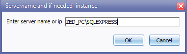
- Click OK and enter the name of your Database (already added in MSSQL Server).
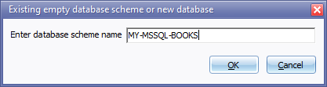
- Click OK.
- Click on the Next button to initiate each of the set up options listed on the right-hand side of the "Creation wizard" screen. Enter and select the necessary information and settings for the following screens:
- Company info - Enter all your business' details such as the address, e-mail address, contact numbers and Company and Tax Registration numbers, which you need to display on all documents, reports, and lists. You may also select the Tax method applicable to your VAT/GST/Sales Tax registration, whether your default output option for documents, reports and lists are on: screen, printer, file, e-mail or fax. You may also load a logo picture to be displayed on your reports or documents, and set your Windows operating system's default date and currency formats.
- Reporting dates - This option allows you to set up the number of reporting dates required, and the start date of your financial year period. The periods or dates will be displayed in the format in which you have set your Windows Operating System's default date on the previous screen.
|
|
The start date of the financial year is the first day of the calendar month in which the Set of Books (Advanced option) is created. For example, it it is created on 20 August 2021, the Start date is 1 August 2021, etc. |
|
|
Before the "Reporting dates" screen is launched, a message will be displayed. Periods are not there Click on OK to launch the "Reporting dates" screen. |
- Batch types - This option allows you to create, delete an existing batch type, or change the name of an existing batch type in which you wish to enter and update or post your transactions to the ledger.
- Groups - This option allows you to set two Reporting groups for your General ledger accounts, Debtors, Creditors, Stock and Document groups.
- Salesperson - This option allows you to enter the salespersons names who will be selling your stock items, or selling services.
- Documents setup - This option allows you to set up your documents Invoices, Credit notes, Quotes, Orders, Purchases and Supplier return documents, you wish to hand to customers (debtors) or suppliers (creditors) when you sell, or quote, or order and purchase, physical stock items and services set up in your stock item code file.
- Stock information - The option allows you to define the units of stock you sell and the selling price descriptions and to set the Cost of sales parameters. This option should only be used if you use stock and/or wish to generate documents (Invoices, Credit notes, Quotes, Orders, Purchases and Supplier returns).
- After the last setup screen (i.e. Stock information) is closed, the Next button will change to the Finish button.
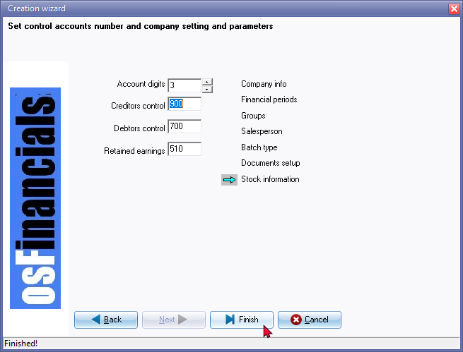
- Click on the Finish button. The new Set of Books will automatically be opened automatically and now ready to work in.
|
|
Before you begin processing transactions, make sure to create your general ledger accounts, bank accounts, tax accounts, debtor accounts, creditor accounts, and review or modify your settings and parameters to ensure accuracy and efficiency. Taking the time to properly set up your osFinancials5 program and customize your Chart of Accounts will contribute to the success of your financial processing and reporting. |
Steps after creating the Set of Books (Advanced)
Deactivate / Activate the Bank import plugin
By default, the Bank import plugin setting is activated.
The "Default bank reconciliation"field in Setup → System parameters (Setup ribbon) is not selected.
|
Bank import plugin - Bank Reconciliations Plugin Manual - BankImport Plugin Manual - Shop - The Bank import plugin is included in the osFinancials5 subscription. The Bankimport plugin will import bank transactions and save you hours of data entry. You can simply link transactions to your debtors, creditors or other accounts. And with a simple mouse click link the payments to the right invoices. Needs to be activated on the Setup ribbon, select Setup → System parameters. |
If you do not intend to wish to use the Bank import plugin at this stage, you need to turn the Bank import plugin off (Tick (select) the "Default bank reconciliation" option on Setup → System parameters (Setup ribbon).
The Bank import plugin can be activated as the Bank import plugin is included in the osFinancials5 subscription.
If bank Bank import plugin is not activated, separate Payments and Receipt batches will be created on the Bank tab when you create (add) Bank accounts in Setup → Accounts (Setup ribbon).
Customise labels for Document types
You may need to customise labels and fix records.
Change the descriptions on the Types tab on Tools → Customise languages (Setup ribbon). If you have a different language than English, you need to translate the descriptions for your language or specific requirements.
Document types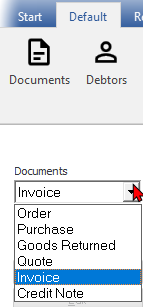5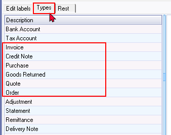
"Goods Returned" - change to Supplier return to be consistent with the other labels in the language file.
The Document type (i.e. Invoice, Credit note, Quote, Purchase, Supplier return or Order) is stored and edited 1n the Tools → Customize language (Setup ribbon).
It should print the Document type (i.e. Invoice, Credit note, Quote, Purchase, Supplier return or Order) as this is more correct for the recipient of these documents.
If you need to print documents using the document layout files supporting one (1) Layout file for all document types), it is recommended that the Document types are edited and/or translated to the singular in the Types tab Tools → Customize language menu (Setup ribbon).
Change Edit Groups
Change the reporting group names (descriptions) of the Groups (Setup ribbon).
You may also add groups for reporting groups, if necessary.
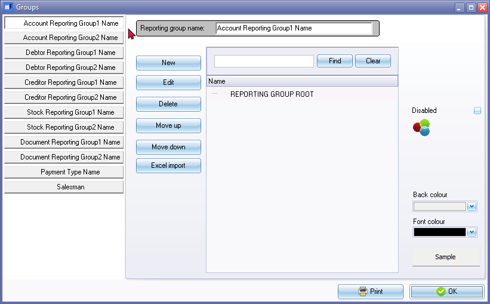
|
|
The name must not already exist and may not be longer than 50 characters. This name will help you to identify the Set of Books on your system. You will need to select this name whenever you need to open the Set of Books or perform some other functions on the Set of Books. |
The following groups are not included if the Set of Books was created using Create Set of Books (Advanced) option:
- Projects - You may create groups for Projects. These Projects may be activated in batches and documents. Once the batches and/or documents are posted (updated to the ledger), you may generate various reports for each Projects on the Sidebar of the Default menu.
- Cost centre 1 and/or Cost centre 2 -
- Languages - Multi-Language accounts -
|
Multi-Language accounts - Manual - Shop - Licence : Once-off - This plugin makes it possible to translate the ledger and group names in multiple languages. It is already possible to choose different languages for the interface (the buttons). But this plugin makes it possible to do the accounting in different languages. Per user you can select a language, so the user can account in his/her own language. The set of books can be viewed in different languages, therefore it is possible an employee enters information into an English Set of Books and a bookkeeper, auditor, etc. can see the set of books in a set language, e.g. Afrikaans, Dutch, etc. |
Add missing Groups and Paper types in the Types table
To add missing groups:
If you intend to use Projects, Cost centres and/or Multi-language Set of Books, you need to add these Groups manually:
- Activate the SQLBrowser plugin in Tools → Activate plugins (Setup ribbon)
- Launch the SQLBrowser plug-in Plugins → Tools → SQLBrowser (Setup ribbon).
- Select the "TYPES" table.
- Right-click and select "Open" on the context menu.
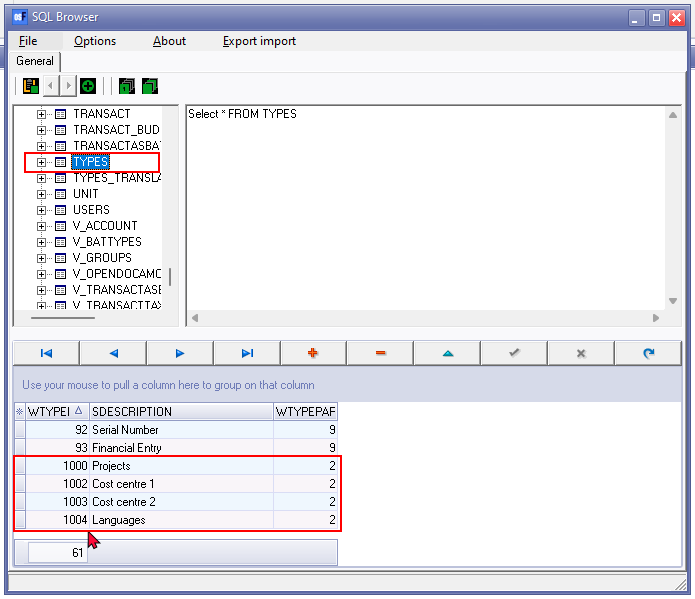
- Select the last record WTYPEID - 93 in the TYPES table. Insert or Add a new record (you may also use the down arrow on your keyboard).
- Add Groups - Optional - If you are planning to use any of the following features in osFinancials, you may add the groups, as required. To do this, type the following records and type 2 in the WTYPEPARENT column:
- 1000 - Projects
- 1002 - Cost centre 1
- 1003 - Cost centre 2
- 1004 - Languages
- Add Paper types - Type the following records and type 5 in the WTYPEPARENT column:
- 55 - Till slip
- 56 - New plain
- Close the SQLBrowser
|
SQLBrowser - Manual - Shop - Licence : Once-off - Activate the SQLBrowser plug-in Tools → Activate Plugins (select Tools → SQLBrowser and click Activate plugin) on the Setup ribbon. |
The groups will be added on Setup → Groups
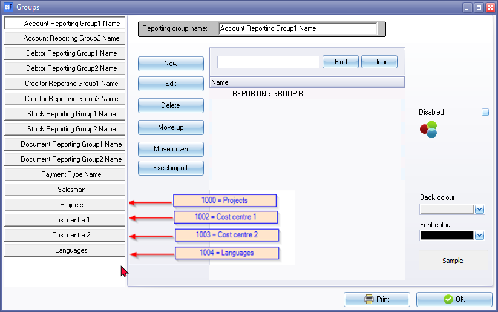
|
|
Before you can start any processing, you need to set up your general ledger accounts, bank account, tax accounts, accounts receivable (debtor accounts), accounts payable (creditor accounts), etc. create and check or change your settings and parameters. This should not take much time, but can save you a lot of extra work and frustration, as the key to success in your processing and reports is in setting up the osFinancials5 program. |
Customise your own Set of Books (Advanced)? - Set Books - Properties
Length of description fields and the basic control accounts
The basic features of your customized Set of Books with the "Customise your own Set of Books (Advanced)?" -option should be as follows:
- Length of description fields - The default length of description fields for accounts is 64 characters and groups are up to 30 characters for group names. The group descriptions are more than 50 characters.
- Account codes - Character length and the default control accounts. Depending on your choice of the number of digits for account codes, during the creation of your own Set of Books, the number of characters for the control accounts and the debtor accounts as well as the creditor accounts will be as follows:
|
Number of digits Account code |
Retained earnings |
Debtors control |
Creditors control |
Number of account code digits - Debtor accounts |
Number of account code digits - Creditor accounts |
|
3X3-DIGITS |
G510-000 |
G700-000 |
G900-000 |
D + 5-characters D00001 |
C + 5-characters C00000 |
|
4X3-DIGITS |
G3100-000 |
G1100-000 |
G2000-000 |
D + 6-characters D000001 |
C + 6-characters C000000 |
|
5X3-DIGITS |
G31000-000 |
G11000-000 |
G20000-000 |
D + 7-characters D0000001 |
C+ 7-characters C0000000 |
|
6X3-DIGITS |
G310000-000 |
G110000-000 |
G200000-000 |
D + 8-characters D00000001 |
C + 8-characters C00000000 |
|
7X3-DIGITS |
G3100000-000 |
G1100000-000 |
G2000000-000 |
D + 9-characters D000000001 |
C + 9-characters - C000000000 |
|
8X3-DIGITS |
G31000000-000 |
G11000000-000 |
G20000000-000 |
D + 10-characters - D0000000001 |
C + 10-characters - C0000000000 |
Customise your own Set of Books - Configure Set of Books
Language settings
If you have created your custom Set of Books in "English" as the default language, the osFinancials interface will be displayed in "English". If the osFinancials interface is displayed in the language of your choice, you can select a different available language in the "Switch language" (Start ribbon).
Set the default language for your Set Books - You can choose your language and country in Setup → Access control. When you reopen your Set of Books, the language in the osFinancials interface, reports, etc. will be displayed in your selected language.
Customise your own language
If you want to customise your own language, you can select your language in Tools → Customise language (Setup ribbon).
|
|
It is strongly recommended that the label, which is edited or entered, is not longer than the default “English” labels’ length. If your label is too long, it may cause some options in the program not to function or display properly. Do not use the Delete button to remove any of the existing edited labels. |

|
|
Care must be taken to ensure that existing labels or descriptions in the main language, i.e. "English" not be modified. You must create a copy of the "English" or other selected language and rename it with a new name. You may use your own language file to edit. |
|
|
If you decide to adapt a selected language file for your own specific industry or specific needs and want to modify these labels accordingly, it is important that you use a copy of the language file. This will prevent your language file from being overwritten when you reinstall osFinancials, or install osFinancials update download files, or install osFinancials updates through the Help menu. |
Customise the "TYPES"-tab
The entries on the "Types"-tab in Tools → Customise language (Setup ribbon) is database specific and will update the "TYPES" table in your Set of Books. You may edit, translate or change the descriptions as necessary.
- Reporting groups - The default descriptions for the reporting groups is available in English as "Account Reporting Group1 Name", etc, , After adding the 4 reporting groups for Projects, Cost centre 1, Cost centre 2 and Languages, these 16 reporting groups, you may change, edit, translate these descriptions on the "Types"-tab in Tools → Customise language (Setup ribbon). These reporting group names may also be reviewed, changes, edited, translated in Setup → Groups according to your specific requirements for your country language or industry. The common reporting group names in most databases, is "Account group 1, Account group 2, Debtor group 1, Debtor group 2, Creditor group 1, Creditor group 2, Stock group 1, Stock group 2, Document group 1, Document group 2, Payment types, Salespersons, Projects, Cost centre 1, Cost centre 2 and Languages".
- Document types - The default descriptions for the standard 6 document types is "Invoice", "Credit note", "Purchase", "Goods Returned", "Quote", and "Order" . You may change, edit, translate the descriptions for the standard 6 document types for sales documents (Invoices, Credit notes and Quotes and for purchase documents (Purchases, Supplier returns and Orders) to match your specific requirements for your country language, tax regime or industry in the Types tab.
In your language file, you may search and edit / translate the language labels for each of these document types. These matching descriptions are also displayed in the "English" language file. If you want to change or edit the labels according to your personal needs, you can make a copy of the "English" language file and feel free to translate the language labels for the document types according to your specific requirements, preferences and industry. You then also search for and modify and adapt the language labels for each of these document types in your own language file.
- Tax terminology - Tax account is the default description for VAT/GST/Sales tax/Consumption tax in the Types tab. You may change this description for your country language, tax regime or industry. In your language file, you may search and edit / translate the language labels for the for the tax terminology.
Customise the "Rest"-tab
The Customize language - Rest tab entries on this tab is database specific.
Change descriptions of the "Description of Zero account" and "Group empty account". The 2 change buttons only saves 1 description. Work around change both to "Empty".
General ledger accounts
Accounts Setup → Accounts - Only the 3 control accounts (i.e. Debtors control + Creditors control + Retained earnings) accounts in the Chart of Accounts is included in the Chart of Accounts.
|
|
You cannot delete these 3 control accounts. An error message will be displayed: "You cannot delete a control account!" You can edit the account code and description for each of these 3 control accounts, if necessary. |
Depending on your choice of the number of digits for account codes, during the creation of your own Set of Books, the number of characters for the control accounts will be as follows:
|
Number of digits Account code |
Retained earnings |
Debtors control |
Creditors control |
|
3X3-DIGITS |
G510-000 |
G700-000 |
G900-000 |
|
4X3-DIGITS |
G3100-000 |
G1100-000 |
G2000-000 |
|
5X3-DIGITS |
G31000-000 |
G11000-000 |
G20000-000 |
|
6X3-DIGITS |
G310000-000 |
G110000-000 |
G200000-000 |
|
7X3-DIGITS |
G3100000-000 |
G1100000-000 |
G2000000-000 |
|
8X3-DIGITS |
G31000000-000 |
G11000000-000 |
G20000000-000 |
Control accounts - You can edit the account code and account description for each of these 3 control accounts.
It is important to note that you need to keep in mind that these control accounts need to be linked to account groups and financial categories:
|
Control account name |
Financial category |
Account groups |
|
|
Retained earnings |
Capital |
Equity / Capital |
|
|
Debtors control |
Assets |
Current assets |
|
|
Creditors control |
Liabilities |
Current liabilities |
|
If you import general ledger accounts from a Tab delimited file, you may:
- Change the account codes and descriptions to meet your specific requirements and needs. In the case of accounts, which contains sub-accounts, you cannot change the sub-accounts account codes. You first need to delete the sub-accounts and rename the account codes and account descriptions and recreate sub-accounts where necessary.
- Review your imported ledger accounts descriptions. You may use longer account descriptions (longer than the default 35-characters or 64-characters) , where necessary.
- Disabled (inactive) accounts imported - review and decide to keep these disabled (inactive) accounts or delete them if not required.
- Tax (VAT/GST/Sales tax) accounts - The first sub-account (tax code) may not include the Tax tab and Tax percentage - You need to delete and recreate the tax account (tax code) as a Tax account. Zero-rated Tax codes. You need to confirm the percentage.
- If Account groups 1 and / or Account group 2 is imported, these account groups may not be linked to the 5 financial categories. You may need to link these account groups to the 5 financial categories.
|
|
Imported or copied text in osFinancials screens from external files - Account / Group descriptions in Accounts description lines in batches When importing or copying text for account. group descriptions or any other screens, or forms, the fields from external programs such as spreadsheet, word documents, etc. the hyphenation character "–" may be displayed as a pipe character " | " in lookups and some screens or as " � " in some screens and in reports, document layout files, etc. For example, Motor vehicles � Net value if copied or imported into Setup - Accounts as Motor vehicles – Net value (with the hyphenation format) it will be displayed as Motor vehicles � Net value on some screens and in reports and as Motor vehicles | Net value on lookup screens. You need to use the dash sign "-" to be displayed correctly. Solution: To ensure hyphens display correctly in osFinancials, use the standard dash character ("-") instead of the hyphenation character when copying or importing text from external files. |
Debtor / Creditor accounts
Depending on your choice of the number of digits for account codes, during the creation of your own Set of Books, the number of digits for the account codes of debtor accounts and creditor accounts will be as follows:
|
Number of digits Account code |
Number of account code digits - Debtor accounts |
Number of account code digits - Creditor accounts |
|
3X3-DIGITS |
D + 5-characters D00001 |
C + 5-characters C00000 |
|
4X3-DIGITS |
D + 6-characters D000001 |
C + 6-characters C000000 |
|
5X3-DIGITS |
D + 7-characters D0000001 |
C+ 7-characters C0000000 |
|
6X3-DIGITS |
D + 8-characters D00000001 |
C + 8-characters C00000000 |
|
7X3-DIGITS |
D + 9-characters D000000001 |
C + 9-characters - C000000000 |
|
8X3-DIGITS |
D + 10-characters - D0000000001 |
C + 10-characters - C0000000000 |
|
|
When creating or adding Debtor accounts and Creditor accounts, it is important that you use a different prefix for the account codes: The first Debtor code (e.g. D00001, etc.), will automatically be generated. It is important to prefix Debtor codes with a unique prefix. In this documentation, the accounts is prefixed as follows:
The reason for this, is that the account prefix is not always available when selecting accounts on some screens and reports. For example, if a Debtor code is D00001 and a Creditor code is C00001, and you select the Debtor code, it may set the Creditor code when selecting the contra account in the "Options for this batch" (F10:Setup) on "Batch entry" screens on "Batch entry" screens. |
Company information
Only "osFinancials5.1.0.127" (osFinancials and the version number) will be displayed in the title bar, unless you have already entered your company name in the Company info screen during the creation of the Set of Books. Review and enter the name and contact details as well as the relevant registration numbers of your business in the Setup → Company info (Setup ribbon).
Financial year and accounting periods
The default start of the financial year is on the first day of the month in which you created your set of books. For example, if you created your Set of Books on 20 March 2024, the start of the financial year will automatically be set as "1 March 2024". You can change this in Setup → Reporting dates for the beginning of your financial year and set the accounting periods.
If you selected a different language than the English languages, for example, "Afrikaans" as the language to create your Set of Books in, the months of the year should already be displayed in "Afrikaans". You may need to review and edit or translate the months of your financial year, if necessary.
Batches (Journals)
No batch types (journal types) are included in your customised Set Books. You will need to add your own batch types (journal types) in Setup → Batch types (Setup ribbon) to meet your specific needs and requirements. The basic journals, are the "Sales journal", "Purchase journal" and the "General journal".
|
|
Receipts journals and Payments journals for Bank accounts and Petty cash accounts When you add or create a Bank account and Petty cash account, the Receipts journals and Payments journals will be created and added and linked to each Bank account and Petty cash account. |
The "Sales journal", should be linked to the Invoices and Credit notes document types in Documents setup. This will update the transactions generated with the Invoices and Credit notes in the Sales journal to the ledger.
The "Purchase journal", should be linked to the Purchases and Supplier returns document types in the Documents setup. This will update the transactions generated with the Purchases and Supplier returns in the Purchase journal to the general ledger.
You can use any number of journal types as you deem necessary to group and process your transactions. In addition to the general journal, you may add specific journals for; cost of sales, adjustments, depreciation, payroll, etc. to accommodate your specific needs and requirements.
Documents setup
The defaults settings in the Setup → Documents setup is as follows:
- Global settings - Documents setup
- Layout file point-of-sale : "DefaultA4" is the default setting and is not available in the " ...\plug_ins\reports\DOCUMENTS\DOCUMENTS " folder. You may change the default layout file to "POS - STARTSP100".
- Append notes below item: By default this option is selected. The default sequence in which the document lines will be displayed on document entry forms and printed in document layout files, is Item/Remark/Comment. If you deselect this option, the sequence in which the document lines will be displayed on document entry forms and printed in document layout files, will be Comment, Item, Remark.
- Auto-post documents on print: By default this option is not selected. This means that you need to manually launch the Update ledger option to post or update documents to the ledger.
- Settings for specific document types. The basic configuration for each document type, is as follows:
|
Field |
Sales documents |
Purchase documents |
||||
|
Document type |
Invoice |
Credit note |
Quote |
Purchase |
Purchase returns |
Orders |
|
Next Document number |
I0N000001 |
C0000001 |
Q0000001 |
P0000001 |
R0000001 |
OR000001 |
|
Batch type |
|
|
|
|
|
|
|
Layout file |
|
|
|
|
|
|
|
Layout file 2 |
- |
- |
- |
- |
- |
- |
|
Heading |
Tax Invoice no. |
Credit note no. |
Quote No |
GRV No |
Goods Returned No |
Order No |
|
Message 1/2/3 |
- |
- |
- |
- |
- |
- |
Customise / translate notes:
You may need to customise, change and translate the following to suit your specific preferences and needs:
- Next Document number - This is an 8-character alphanumeric field. You may use prefixes for each document type. Prefixes will make it easier to identify the document type in searches and filters, on reports and on exported data in spreadsheets. The character prefixes for each document number are in English. You can change the document numbers for each type of document to suit your specific preferences and needs.
- Batch types - No batch types or journals are available at this stage. You will need to select the default journals in which the documents will be posted (updated) to the ledger. If you have already created journals earlier during the creation of your advanced Set of Books, you can select the "Sales journal" for Invoices and Credit notes and the "Purchase journal" for Purchases and Supplier returns. If not, you will first need to create the journal types in Setup → Batch types (Setup ribbon) such as "Sales journal" and "Purchase journal". Journals do not apply to Quotes and Orders.
- Layout file - You can select "Layout file" at this stage for all document types. The "Layout file" is one standard generic layout file that applies to all document types (Invoices, Credit notes, Quotes, Purchases, Supplier returns and Orders) and is translated via the language files. The layout file selected is a global setting. You may also select custom or other layout files as defaults for specific debtor or creditor accounts.
- Layout file 2 - This option is not selected. You may select other layout files or the delivery note to print after the Layout file.
- Headings - You may change the headings of each document headings to match your country language, tax regime or industry.
- Messages - No messages is available at this stage. You may enter up to 3 lines as a global message (for each document type) that will be displayed on the "Message" fields of the document entry screens and printed on document layout files for each document type. Custom messages may be set as default for specific debtor or creditor accounts.
- Statement message - You can enter up to 3 lines of statement messages in the Statement setup tab. This is a global standard message that will appear on all debtor account statements.
Additional settings for documents
Post / Confirm and Delete buttons on Documents grid - By default, only the New, Edit and Print buttons are available on the Documents grid screen's sidebar. You may add the Posting and Delete buttons underneath the Print button. To add the Posting and Delete buttons to the Document grid screen, select (tick) the "Document posting" field on the Documents tab in Setup → Access control.
Stock items / Inventory items
Before you add or import your stock items / inventory items / products you may need to configure some important basic settings such as Cost of sales, Create tax classes / account classes and Selling prices.
At this point, your chart of accounts (general ledger accounts) should have already been finalised.
Activate Cost of Sales
By default cost of sales is not activated. You need to configure cost of sales as follows:
- Cost of Sales journal - Create a cost of sales batch (journal) type (Setup → Batch types) to update the transactions for cost of sales to the ledger when you post documents.
- Cost of sales settings (Setup → Stock information) - Select the following:
- Create cost of sales - To activate cost of sales, select (tick) the "Create cost of sales" tick box.
- Cost of sales batch - Select the Cost of sales batch (journal) in which the cost of sales transactions will be posted.
- Use “Average cost” or “Latest cost” option.
|
|
The method you use to calculate the value of your stock is crucial for determining its impact on your profit and loss figures. It is important to consider whether to use the “average cost” or the “latest cost” method. If you are unsure which method to use, it is recommended that you seek guidance from your accountant. |
Create tax classes / account classes
At this point, your chart of accounts (general ledger accounts) should have already been finalised.
You need to link each stock item / inventory item / product to the applicable ledger accounts (i.e. Input tax, Output tax, Sales account, Cost of sales account and Stock control account).
Tax classes may be set and linked to each category of tax and various tax rates such as Output tax, Input tax - Standard rate, Input tax - Capital goods, Zero rated goods, Exempt supplies applicable to the stock items / inventory items / products in your country and tax jurisdiction, etc.
Tax classes is defined and managed in the Tax classes tab in Setup → Stock information. When you create add or import your stock items / inventory items / products you may select a pre-configured Tax class to automatically link the 5 accounts (i.e. Input tax, Output tax, Sales account, Cost of sales account and Stock control account) applicable to the stock item / inventory item / product.
Selling prices
osFinancials supports up to 3 selling prices (i.e. Selling price 1, Selling price 2 and Selling price 3). You may change the descriptions of these selling prices on the "Selling price descriptions" section of the Default tab of Setup → Stock information to suit your specific requirements and set one of these Selling prices as the default Selling price (global setting) for your Set of Books.
In addition to this, you may set one of these Selling prices as the default Selling price on the Accounting information tab for specific debtor (customer / client) accounts.
|
Price agreement plugin - Manual - Shop - Licence : Once-off - In addition to the standard 3 selling prices in odFinancials, Price agreement plugin, allows you to set up to five (5) levels of quantity discounts that can be applied to specific debtors or groups of debtors. Additionally, you can set a special price for individual debtors per product. These prices will overrule the default Selling price 1 / 2 / 3 and can be set per debtor (customer / client). The price agreement may also be activated for creditor (supplier / vendor) accounts. |
Units of stock
Add and define the units such as each, hours, etc. for your stock items / inventory / products. You may add these descriptions on the Units tab in Setup → Stock information.
Reporting groups - Stock group 1 / Stock group 2
In osFinancials, you have the option to set up to 2 reporting groups for your stock items / inventory items / products, allowing you to categorise search, filter and report on your products more effectively. These reporting groups provide a way to organize and analyse your inventory based on specific criteria.
You may add these Stock groups in Setup → Groups can be linked to each stock item (inventory item / product).
Set the Calendar as default
You have the option to activate the Calendar to be launched instead of the Welcome screen whenever you open a Set of Books, This means that the Calendar will be automatically displayed as the default screen.